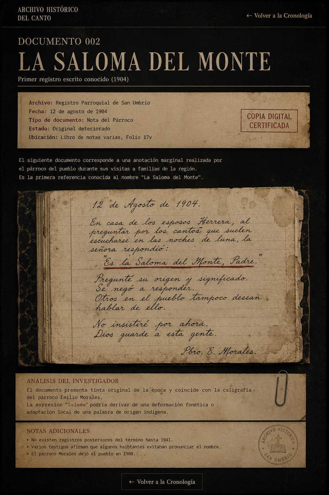

El siguiente documento corresponde a una anotación realizada por el párroco Emilio Morales durante una visita pastoral a varias familias de la región. Los investigadores consideran que esta es la primera referencia conocida al término: "La Saloma del Monte".

La expresión aparece mencionada de manera casual, como si los habitantes ya estuvieran familiarizados con ella. Sin embargo, el sacerdote no ofrece ninguna explicación sobre su significado.
Resulta llamativo que la mujer entrevistada se negara a ampliar la información y que otros vecinos mostraran la misma actitud.
No se han encontrado documentos anteriores que utilicen esta expresión.
La autenticidad del documento ha sido discutida por diversos investigadores. Sin embargo, los análisis de tinta y papel realizados sobre la copia conservada son consistentes con materiales utilizados a principios del siglo XX.